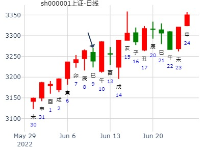
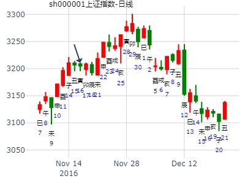
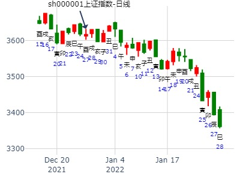

动爻合变爻用神，冲走动爻则为应期。
例197、
辰月丙子日，因雨占晴，得巽之姤。
兄弟卯木′ 世
子孙巳火′
妻财未土″ 动 子孙午火
官鬼酉金′ 应
父母亥水′
妻财丑土″
例198、
又令人占，得姤之乾。
父母戌土′
兄弟申金′
官鬼午火′ 应
兄弟酉金′
子孙亥水′
父母丑土″ 世 动 子孙子水
（用神为变爻被合绊，也可以冲开）
例199、
又令人占，得天雷无妄。
妻财戌土′
官鬼申金′
子孙午火′ 世
妻财辰土″
兄弟寅木″
父母子水′ 应
此因满城欲装台阁以赛神，因连日忽晴忽雨，不敢装扮。余以此三卦合而决之，知癸未日必大晴。
前卦，未土财化出午火子孙，古法谓之合住财爻不晴，予每验冲开之日必晴。
况此卦子日占，子水已冲开午火，而未土不能作合，故知未日必晴。（注：当天己经冲开了，就不论合了，而从值日找应期）
二卦，丑土父母为雨，化出子水子孙为晴，亦应未日冲开丑土，而子水子孙不能与丑作合，亦当晴于未日。
三卦，午火子孙，子日冲之而暗动，动而逢合之日，亦应晴于未日。
至癸未日，果万里晴光
6月第1周兼5月第4周：姤之乾，父化子丑化子。6月15日前大盘安全否？（暗动而逢合的应期）
主帖标题: 1月18日
出生年：年 性别：男 占事: 19
起卦方式：手工指定 周易天地
公历时间：2010年1月19日9时36分
干支：己丑年 丁丑月 己巳日 己巳时
旬空：午未 申酉 戌亥 戌亥
巽宫：巽为风（六冲） 乾宫：天风姤
六神 【本 卦】 【变 卦】
勾陈 ▄▄▄▄▄ 兄弟辛卯木 世 ▄▄▄▄▄ 妻财壬戌土
朱雀 ▄▄▄▄▄ 子孙辛巳火 ▄▄▄▄▄ 官鬼壬申金
青龙 ▄▄ ▄▄ 妻财辛未土 X-> ▄▄▄▄▄ 子孙壬午火 应
玄武 ▄▄▄▄▄ 官鬼辛酉金 应 ▄▄▄▄▄ 官鬼辛酉金
白虎 ▄▄▄▄▄ 父母辛亥水 ▄▄▄▄▄ 父母辛亥水
螣蛇 ▄▄ ▄▄ 妻财辛丑土 ▄▄ ▄▄ 妻财辛丑土 世
求测人：某人，男，庚申(1980年)，自动起卦(起卦方式)
占问事宜：测上证丁酉年上半年何月是顶？
公历：2017年1月21日15时31分，星期六。
干支：丙申年 辛丑月 戊申日 庚申时 --旬空：寅卯
巽为风 天风姤
六神 伏神 本 卦 变 卦
朱雀 ▅▅▅▅▅ 兄弟卯木 世 ▅▅▅▅▅ 妻财戌土
青龙 ▅▅▅▅▅ 子孙巳火 ▅▅▅▅▅ 官鬼申金
玄武 ▅▅ ▅▅ 妻财未土 Ｘ→ ▅▅▅▅▅ 子孙午火 应
白虎 ▅▅▅▅▅ 官鬼酉金 应 ▅▅▅▅▅ 官鬼酉金
腾蛇 ▅▅▅▅▅ 父母亥水 ▅▅▅▅▅ 父母亥水
勾陈 ▅▅ ▅▅ 妻财丑土 ▅▅ ▅▅ 妻财丑土 世
测上证综指在2019年1月份走势 ytang
公历起卦时间：2019年1月1日16时53分 (手工指定)
干支：戊戌年 甲子月 戊戌日 庚申时 （日空：辰巳）
巽宫：巽为风 (六冲) 乾宫：天风姤
六神 伏神 本 卦 变 卦
朱雀 兄弟辛卯木 ▅▅▅▅▅ 世 妻财壬戌土 ▅▅▅▅▅
青龙 子孙辛巳火 ▅▅▅▅▅ 官鬼壬申金 ▅▅▅▅▅
玄武 妻财辛未土 ▅▅ ▅▅ ╳→ 子孙壬午火 ▅▅▅▅▅ 应
白虎 官鬼辛酉金 ▅▅▅▅▅ 应 官鬼辛酉金 ▅▅▅▅▅
腾蛇 父母辛亥水 ▅▅▅▅▅ 父母辛亥水 ▅▅▅▅▅
勾陈 妻财辛丑土 ▅▅ ▅▅ 妻财辛丑土 ▅▅ ▅▅ 世
冲处逢合，丑月丑日
主帖标题: 1.13上证
公历起卦时间：2020年1月13日9时56分 (手工指定)
干支：己亥年 丁丑月 乙卯日 辛巳时 （日空：子丑）
巽宫：巽为风 (六冲) 乾宫：天风姤
六神 伏神 本 卦 变 卦
玄武 兄弟辛卯木 ▅▅▅▅▅ 世 妻财壬戌土 ▅▅▅▅▅
白虎 子孙辛巳火 ▅▅▅▅▅ 官鬼壬申金 ▅▅▅▅▅
腾蛇 妻财辛未土 ▅▅ ▅▅ ╳→ 子孙壬午火 ▅▅▅▅▅ 应
勾陈 官鬼辛酉金 ▅▅▅▅▅ 应 官鬼辛酉金 ▅▅▅▅▅
朱雀 父母辛亥水 ▅▅▅▅▅ 父母辛亥水 ▅▅▅▅▅
青龙 妻财辛丑土 ▅▅ ▅▅ 妻财辛丑土 ▅▅ ▅▅ 世
世爻兄弟值日，当天虽然涨。后面就是顶。
主帖标题: 用河洛理数起卦推算上证大盘走势
2月１３日：河洛流日卦 占事：今日股市
丙寅－－己丑日
巽宫：巽为风（六冲） 乾宫：天风姤
勾陈 ▄▄▄▄▄ 兄弟辛卯木 世 ▄▄▄▄▄ 妻财壬戌土
朱雀 ▄▄▄▄▄ 子孙辛巳火 ▄▄▄▄▄ 官鬼壬申金
青龙 ▄▄ ▄▄ 妻财辛未土 X-> ▄▄▄▄▄ 子孙壬午火 应
玄武 ▄▄▄▄▄ 官鬼辛酉金 应 ▄▄▄▄▄ 官鬼辛酉金
白虎 ▄▄▄▄▄ 父母辛亥水 ▄▄▄▄▄ 父母辛亥水
螣蛇 ▄▄ ▄▄ 妻财辛丑土 ▄▄ ▄▄ 妻财辛丑土 世
兄持变财有一定的抛售压力，兄得月令，财得日扶，震荡较大．2244开盘，高点2297恐以2264或2246收.对今日预测不一定正确．有些东东还要继续摸索．
大黑山测沪市大盘(3月16～20日)之行情涨跌，得：
起卦方式：报数起卦 (13,13) 动爻加时辰
公历时间：2009年3月15日13时40分
干支：己丑年 丁卯月 己未日 辛未时 旬空：午未 戌亥 子丑 戌亥
巽宫：巽为风（六冲） 乾宫：天风姤
六神 【本 卦】 【变 卦】
勾陈 ▄▄▄▄▄ 兄弟辛卯木 世 ▄▄▄▄▄ 妻财壬戌土
朱雀 ▄▄▄▄▄ 子孙辛巳火 ▄▄▄▄▄ 官鬼壬申金
青龙 ▄▄ ▄▄ 妻财辛未土 X-> ▄▄▄▄▄ 子孙壬午火 应
玄武 ▄▄▄▄▄ 官鬼辛酉金 应 ▄▄▄▄▄ 官鬼辛酉金
白虎 ▄▄▄▄▄ 父母辛亥水 ▄▄▄▄▄ 父母辛亥水
螣蛇 ▄▄ ▄▄ 妻财辛丑土 ▄▄ ▄▄ 妻财辛丑土 世
财动化子生。
本周大涨。
六四：悔亡，田获三品。
唯戌日原神午火入墓，冲高回落。
巽之姤。悔亡，田获三品。财化子，未化午，周卦大涨。
主帖标题: 3.8 大盘
公历时间：2022年3月7日17时59分
干 支：壬寅年 癸卯月 己未日 癸酉时
旬 空：辰巳 辰巳 子丑 戌亥
巽宫：巽为风 (六冲) 乾宫：天风姤
六神 伏神 本 卦 变 卦
勾陈 兄弟辛卯木 ▅▅▅▅▅ 世 妻财壬戌土 ▅▅▅▅▅
朱雀 子孙辛巳火 ▅▅▅▅▅ 官鬼壬申金 ▅▅▅▅▅
青龙 妻财辛未土 ▅▅ ▅▅ ╳→ 子孙壬午火 ▅▅▅▅▅ 应
玄武 官鬼辛酉金 ▅▅▅▅▅ 应 官鬼辛酉金 ▅▅▅▅▅
白虎 父母辛亥水 ▅▅▅▅▅ 父母辛亥水 ▅▅▅▅▅
螣蛇 妻财辛丑土 ▅▅ ▅▅ 妻财辛丑土 ▅▅ ▅▅ 世
未日未土化子孙午火回头生，妻财过旺。空方过旺，必涨，涨幅不小。
尤其是未时。
巽之姤， 元亨光辉岁月手摇铜钱测5月17日-21日上证综指
公历起卦时间：2010年5月13日17时22分 (手工指定)
干支：庚寅年 辛巳月 癸亥日 辛酉时 （日空：子丑）
神煞：驿马－巳 桃花－子 日禄－子 贵人－卯，巳
巽宫：巽为风 (六冲) 乾宫：天风姤
六神 伏神 本 卦 变 卦
白虎 兄弟辛卯木 ▅▅▅▅▅ 世 妻财壬戌土 ▅▅▅▅▅
腾蛇 子孙辛巳火 ▅▅▅▅▅ 官鬼壬申金 ▅▅▅▅▅
勾陈 妻财辛未土 ▅▅ ▅▅ ╳→ 子孙壬午火 ▅▅▅▅▅ 应
朱雀 官鬼辛酉金 ▅▅▅▅▅ 应 官鬼辛酉金 ▅▅▅▅▅
青龙 父母辛亥水 ▅▅▅▅▅ 父母辛亥水 ▅▅▅▅▅
玄武 妻财辛丑土 ▅▅ ▅▅ 妻财辛丑土 ▅▅ ▅▅ 世
马后炮：
此卦五爻子孙巳火暗动，月+变爻+暗动，容易形成子孙过旺，反喜墓藏。
19，20日巳午日反而不涨。戌日收子孙入墓涨。
17日卯日： 猜是亥日（起卦日）+流日卯+动爻未， 三合兄弟局，而跌。
占事：下周5.30~6.3大盘走势
公历起卦时间：2016年5月29日16时0分 (在线摇卦)
干支：丙申年 癸巳月 辛亥日 丙申时 （日空：寅卯）
神煞：驿马－巳 桃花－子 日禄－酉 贵人－寅，午
巽宫：巽为风 (六冲) 乾宫：天风姤
六神 伏神 本 卦 变 卦
腾蛇 兄弟辛卯木 ▅▅▅▅▅ 世 妻财壬戌土 ▅▅▅▅▅
勾陈 子孙辛巳火 ▅▅▅▅▅ 官鬼壬申金 ▅▅▅▅▅
朱雀 妻财辛未土 ▅▅ ▅▅ ╳→ 子孙壬午火 ▅▅▅▅▅ 应
青龙 官鬼辛酉金 ▅▅▅▅▅ 应 官鬼辛酉金 ▅▅▅▅▅
玄武 父母辛亥水 ▅▅▅▅▅ 父母辛亥水 ▅▅▅▅▅
白虎 妻财辛丑土 ▅▅ ▅▅ 妻财辛丑土 ▅▅ ▅▅ 世
合处逢冲，则大涨。
主帖标题: 2020.05.11日-15日上证指数擂台赛第十七局D方（周测）
公历起卦时间：2020年5月8日14时21分 (手工指定)
干支：庚子年 辛巳月 辛亥日 乙未时 （日空：寅卯）
巽宫：巽为风 (六冲) 乾宫：天风姤
六神 伏神 本 卦 变 卦
螣蛇 兄弟辛卯木 ▅▅▅▅▅ 世 妻财壬戌土 ▅▅▅▅▅
勾陈 子孙辛巳火 ▅▅▅▅▅ 官鬼壬申金 ▅▅▅▅▅
朱雀 妻财辛未土 ▅▅ ▅▅ ╳→ 子孙壬午火 ▅▅▅▅▅ 应
青龙 官鬼辛酉金 ▅▅▅▅▅ 应 官鬼辛酉金 ▅▅▅▅▅
玄武 父母辛亥水 ▅▅▅▅▅ 父母辛亥水 ▅▅▅▅▅
白虎 妻财辛丑土 ▅▅ ▅▅ 妻财辛丑土 ▅▅ ▅▅ 世

主帖标题: 5.26上证
公历起卦时间：2020年5月25日21时58分 (手工指定)
干支：庚子年 辛巳月 戊辰日 癸亥时 （日空：戌亥）
巽宫：巽为风 (六冲) 乾宫：天风姤
六神 伏神 本 卦 变 卦
朱雀 兄弟辛卯木 ▅▅▅▅▅ 世 妻财壬戌土 ▅▅▅▅▅
青龙 子孙辛巳火 ▅▅▅▅▅ 官鬼壬申金 ▅▅▅▅▅
玄武 妻财辛未土 ▅▅ ▅▅ ╳→ 子孙壬午火 ▅▅▅▅▅ 应
白虎 官鬼辛酉金 ▅▅▅▅▅ 应 官鬼辛酉金 ▅▅▅▅▅
螣蛇 父母辛亥水 ▅▅▅▅▅ 父母辛亥水 ▅▅▅▅▅
勾陈 妻财辛丑土 ▅▅ ▅▅ 妻财辛丑土 ▅▅ ▅▅ 世
主帖标题: 猜板
2022-05-27 002350北京科锐
干支：壬寅年 乙巳月 庚辰日 癸未时 （日空：申酉）
巽宫：巽为风 (六冲) 乾宫：天风姤
六神 伏神 本 卦 变 卦
螣蛇 兄弟辛卯木 ▅▅▅▅▅ 世 妻财壬戌土 ▅▅▅▅▅
勾陈 子孙辛巳火 ▅▅▅▅▅ 官鬼壬申金 ▅▅▅▅▅
朱雀 妻财辛未土 ▅▅ ▅▅ ╳→ 子孙壬午火 ▅▅▅▅▅ 应
青龙 官鬼辛酉金 ▅▅▅▅▅ 应 官鬼辛酉金 ▅▅▅▅▅
玄武 父母辛亥水 ▅▅▅▅▅ 父母辛亥水 ▅▅▅▅▅
白虎 妻财辛丑土 ▅▅ ▅▅ 妻财辛丑土 ▅▅ ▅▅ 世
今天两板，下星期几板。
601600中国铝业 占事: 601600起卦方式：手动摇卦 周易天地
公历时间：2007年6月3日0时35分
干支：丁亥年 乙巳月 戊辰日 壬子时 旬空：午未 寅卯 戌亥 寅卯
神煞：驿马─寅 桃花─酉 日禄─巳 贵人─丑，未
巽宫：巽为风（六冲） 乾宫：天风姤 六神 【本 卦】 【变 卦】
朱雀 ▄▄▄▄▄ 兄弟辛卯木 世 ▄▄▄▄▄ 妻财壬戌土
青龙 ▄▄▄▄▄ 子孙辛巳火 ▄▄▄▄▄ 官鬼壬申金
玄武 ▄▄ ▄▄ 妻财辛未土 X-> ▄▄▄▄▄ 子孙壬午火 应
白虎 ▄▄▄▄▄ 官鬼辛酉金 应 ▄▄▄▄▄ 官鬼辛酉金
螣蛇 ▄▄▄▄▄ 父母辛亥水 ▄▄▄▄▄ 父母辛亥水
勾陈 ▄▄ ▄▄ 妻财辛丑土 ▄▄ ▄▄ 妻财辛丑土 世
主帖标题: 预测财运专帖 -农历生辰：八一年五月十八
所测之事：本人07年财运 起卦方式：银币摇卦
时间：丁亥年 丙午日 庚辰日 丁亥时（申酉空） 2007-06-16
神煞：驿马─寅 桃花─酉 日禄─申 贵人─丑，未
巽宫：巽为风（六冲） 乾宫：天风姤
六神 【本 卦】 【变 卦】
螣蛇 ▄▄▄▄▄ 兄弟辛卯木 世 ▄▄▄▄▄ 妻财壬戌土
勾陈 ▄▄▄▄▄ 子孙辛巳火 ▄▄▄▄▄ 官鬼壬申金
朱雀 ▄▄ ▄▄ 妻财辛未土 X-> ▄▄▄▄▄ 子孙壬午火 应
青龙 ▄▄▄▄▄ 官鬼辛酉金 应 ▄▄▄▄▄ 官鬼辛酉金
玄武 ▄▄▄▄▄ 父母辛亥水 ▄▄▄▄▄ 父母辛亥水
白虎 ▄▄ ▄▄ 妻财辛丑土 ▄▄ ▄▄ 妻财辛丑土 世
600291午月： 巽为风之天风姤。大牛.md
时间: 2017-06-07 13时18分
干支: 丁酉年丙午月乙丑日 (旬空: 戌亥 )
巽为风 天风姤
六神 伏神 本 卦 变 卦
玄武 ▅▅▅▅▅ 兄弟卯木 世 ▅▅▅▅▅ 妻财戌土
白虎 ▅▅▅▅▅ 子孙巳火 ▅▅▅▅▅ 官鬼申金
腾蛇 ▅▅ ▅▅ 妻财未土 Ｘ→ ▅▅▅▅▅ 子孙午火 应
勾陈 ▅▅▅▅▅ 官鬼酉金 应 ▅▅▅▅▅ 官鬼酉金
朱雀 ▅▅▅▅▅ 父母亥水 ▅▅▅▅▅ 父母亥水
青龙 ▅▅ ▅▅ 妻财丑土 ▅▅ ▅▅ 妻财丑土 世

6.15星期三上证收盘个位数 是几？-aw
排卦：中国六爻同盟
起卦方式：电脑自动
公历时间：2022年06月09日10时34分
干 支：壬寅年 丙午月 癸巳日 丁巳时 日 空：午未
巽宫：巽为风（六冲） 乾宫：天风姤
六神 【本 卦】 【变 卦】
白虎 ▅▅▅▅▅ 兄弟辛卯木 世 ▅▅▅▅▅ 妻财壬戌土
螣蛇 ▅▅▅▅▅ 子孙辛巳火 ▅▅▅▅▅ 官鬼壬申金
勾陈 ▅▅ ▅▅ 妻财辛未土 X ▅▅▅▅▅ 子孙壬午火 应
朱雀 ▅▅▅▅▅ 官鬼辛酉金 应 ▅▅▅▅▅ 官鬼辛酉金
青龙 ▅▅▅▅▅ 父母辛亥水 ▅▅▅▅▅ 父母辛亥水
玄武 ▅▅ ▅▅ 妻财辛丑土 ▅▅ ▅▅ 妻财辛丑土 世

300726未来二周--风生水起
时间: 2022-06-11 12时45分
干支: 壬寅年丙午月乙未日 (旬空: 辰巳 )
巽为风 天风姤
六神 伏神 本 卦 变 卦
玄武 ▅▅▅▅▅ 兄弟卯木 世 ▅▅▅▅▅ 妻财戌土
白虎 ▅▅▅▅▅ 子孙巳火 ▅▅▅▅▅ 官鬼申金
腾蛇 ▅▅ ▅▅ 妻财未土 Ｘ→ ▅▅▅▅▅ 子孙午火 应
勾陈 ▅▅▅▅▅ 官鬼酉金 应 ▅▅▅▅▅ 官鬼酉金
朱雀 ▅▅▅▅▅ 父母亥水 ▅▅▅▅▅ 父母亥水
青龙 ▅▅ ▅▅ 妻财丑土 ▅▅ ▅▅ 妻财丑土 世
风生水起300724二周。世爻兄弟入日墓。
亥子丑寅，连续调整。静爻巳逢冲，只是冲实，没动。
九戒，占焦煤1501 在7月14-18日的一周走势
公历时间：2014年7月13日14时54分
干 支：甲午年 辛未月 乙酉日 癸未时 旬空：辰巳 戌亥 (午未) 申酉
巽宫：巽为风（六冲） 乾宫：天风姤
六神 【本 卦】 【变 卦】
玄武 ▄▄▄▄▄ 兄弟辛卯木 世 ▄▄▄▄▄ 妻财壬戌土
白虎 ▄▄▄▄▄ 子孙辛巳火 ▄▄▄▄▄ 官鬼壬申金
螣蛇 ▄▄ ▄▄ 妻财辛未土 X-> ▄▄▄▄▄ 子孙壬午火 应
勾陈 ▄▄▄▄▄ 官鬼辛酉金 应 ▄▄▄▄▄ 官鬼辛酉金
朱雀 ▄▄▄▄▄ 父母辛亥水 ▄▄▄▄▄ 父母辛亥水
青龙 ▄▄ ▄▄ 妻财辛丑土 ▄▄ ▄▄ 妻财辛丑土 世
午未空，出空或冲空时将大涨。
明天子日可能大涨。（反馈：没有大涨。午未均空。只冲了午火实，还不管用？）
【火月土财得回头生，不一定涨】
井之节， 官化财，财化子。 九戒 占事：焦煤1501 714-718
公历时间：2014年7月12日15时50分
干 支：甲午年 辛未月 甲申日 壬申时
旬 空：辰巳 戌亥 (午未) 戌亥
震宫：水风井 坎宫：水泽节（六合）
六神 伏 神 【本 卦】 【变 卦】
玄武 ▄▄ ▄▄ 父母戊子水 ▄▄ ▄▄ 父母戊子水
白虎 ▄▄▄▄▄ 妻财戊戌土 世 ▄▄▄▄▄ 妻财戊戌土
螣蛇 子孙庚午火 ▄▄ ▄▄ 官鬼戊申金 ▄▄ ▄▄ 官鬼戊申金 应
勾陈 ▄▄▄▄▄ 官鬼辛酉金 O-> ▄▄ ▄▄ 妻财丁丑土
朱雀 兄弟庚寅木 ▄▄▄▄▄ 父母辛亥水 应 ▄▄▄▄▄ 兄弟丁卯木
青龙 ▄▄ ▄▄ 妻财辛丑土 X-> ▄▄▄▄▄ 子孙丁巳火 世
占事: 测中国船舶辛卯年申月8.12日收盘能站上46.20？
起卦方式：手动摇卦 周易天地
公历时间：2011年8月7日7时6分
干支：辛卯年 乙未月 甲午日 戊辰时
旬空：午未 辰巳 辰巳 戌亥
神煞：驿马─申 桃花─卯 日禄─寅 贵人─丑，未
巽宫：巽为风（六冲） 乾宫：天风姤
六神 【本 卦】 【变 卦】
玄武 ▄▄▄▄▄ 兄弟辛卯木 世 ▄▄▄▄▄ 妻财壬戌土
白虎 ▄▄▄▄▄ 子孙辛巳火 ▄▄▄▄▄ 官鬼壬申金
螣蛇 ▄▄ ▄▄ 妻财辛未土 X-> ▄▄▄▄▄ 子孙壬午火 应
勾陈 ▄▄▄▄▄ 官鬼辛酉金 应 ▄▄▄▄▄ 官鬼辛酉金
朱雀 ▄▄▄▄▄ 父母辛亥水 ▄▄▄▄▄ 父母辛亥水
青龙 ▄▄ ▄▄ 妻财辛丑土 ▄▄ ▄▄ 妻财辛丑土 世
巽之姤，漫步人生808周大盘.md
时间: 2022-08-07 22时1分
干支: 壬寅年戊申月壬辰日 (旬空: 午未 )
巽为风 天风姤
六神 伏神 本 卦 变 卦
白虎 ▅▅▅▅▅ 兄弟卯木 世 ▅▅▅▅▅ 妻财戌土
腾蛇 ▅▅▅▅▅ 子孙巳火 ▅▅▅▅▅ 官鬼申金
勾陈 ▅▅ ▅▅ 妻财未土 Ｘ→ ▅▅▅▅▅ 子孙午火 应
朱雀 ▅▅▅▅▅ 官鬼酉金 应 ▅▅▅▅▅ 官鬼酉金
青龙 ▅▅▅▅▅ 父母亥水 ▅▅▅▅▅ 父母亥水
玄武 ▅▅ ▅▅ 妻财丑土 ▅▅ ▅▅ 妻财丑土 世
主帖标题: 9.14上证
公历起卦时间：2020年9月11日21时24分 (手工指定)
干支：庚子年 乙酉月 丁巳日 辛亥时 （日空：子丑）
神煞：驿马－亥 桃花－午 日禄－午 贵人－酉，亥
巽宫：巽为风 (六冲) 乾宫：天风姤
六神 伏神 本 卦 变 卦
青龙 兄弟辛卯木 ▅▅▅▅▅ 世 妻财壬戌土 ▅▅▅▅▅
玄武 子孙辛巳火 ▅▅▅▅▅ 官鬼壬申金 ▅▅▅▅▅
白虎 妻财辛未土 ▅▅ ▅▅ ╳→ 子孙壬午火 ▅▅▅▅▅ 应
螣蛇 官鬼辛酉金 ▅▅▅▅▅ 应 官鬼辛酉金 ▅▅▅▅▅
勾陈 父母辛亥水 ▅▅▅▅▅ 父母辛亥水 ▅▅▅▅▅
朱雀 妻财辛丑土 ▅▅ ▅▅ 妻财辛丑土 ▅▅ ▅▅ 世
六四：悔亡，田获三品。象曰：田获三品，有功也。
六爻：财动化孙回头合
综合：早盘强，下午弱
风生水起
占事: 000731 下周 起卦方式：手动摇卦 周易天地爻线上排盘系统
公历时间：2014年10月11日10时39分
干支：甲午年 甲戌月 乙卯日 辛巳时 旬空：辰巳 申酉 子丑 申酉
巽宫：巽为风（六冲） 乾宫：天风姤
六神 【本 卦】 【变 卦】
玄武 ▄▄▄▄▄ 兄弟辛卯木 世 ▄▄▄▄▄ 妻财壬戌土
白虎 ▄▄▄▄▄ 子孙辛巳火 ▄▄▄▄▄ 官鬼壬申金
螣蛇 ▄▄ ▄▄ 妻财辛未土 X-> ▄▄▄▄▄ 子孙壬午火 应
勾陈 ▄▄▄▄▄ 官鬼辛酉金 应 ▄▄▄▄▄ 官鬼辛酉金
朱雀 ▄▄▄▄▄ 父母辛亥水 ▄▄▄▄▄ 父母辛亥水
青龙 ▄▄ ▄▄ 妻财辛丑土 ▄▄ ▄▄ 妻财辛丑土 世
马后炮：虽是财化子之良爻，但是应爻酉金被冲暗动，泄财历害。于是就跌。
且世爻兄弟值日得月合助。

占事: 占上证指数下周涨跌1117-1121
起卦方式：手动摇卦 周易天地线上排盘系统
公历时间：2014年11月14日16时6分
干支：甲午年 乙亥月 己丑日 壬申时
旬空：辰巳 申酉 午未 戌亥
神煞：驿马─亥 桃花─午 日禄─午 贵人─子，申
巽宫：巽为风（六冲） 乾宫：天风姤
六神 【本 卦】 【变 卦】
勾陈 ▄▄▄▄▄ 兄弟辛卯木 世 ▄▄▄▄▄ 妻财壬戌土
朱雀 ▄▄▄▄▄ 子孙辛巳火 ▄▄▄▄▄ 官鬼壬申金
青龙 ▄▄ ▄▄ 妻财辛未土 X-> ▄▄▄▄▄ 子孙壬午火 应
玄武 ▄▄▄▄▄ 官鬼辛酉金 应 ▄▄▄▄▄ 官鬼辛酉金
白虎 ▄▄▄▄▄ 父母辛亥水 ▄▄▄▄▄ 父母辛亥水
螣蛇 ▄▄ ▄▄ 妻财辛丑土 ▄▄ ▄▄ 妻财辛丑土 世
马后炮：此卦午未合绊且空，在等午未出空
主帖标题: 铜钱卦，请笑纳……
东方市场明日17日涨跌？
公历时间：2011年11月16日21时18分 农历时间：辛卯年 十月二十一日亥时
干支：辛卯年 癸亥月 乙亥日 丁亥时
旬空：辰巳 子丑 申酉 午未
神煞：驿马─巳 桃花─子 日禄─卯 贵人─子，申
巽宫：巽为风（六冲） 乾宫：天风姤
六神 【本 卦】 【变 卦】
玄武 ▄▄▄▄▄ 兄弟辛卯木 世 ▄▄▄▄▄ 妻财壬戌土
白虎 ▄▄▄▄▄ 子孙辛巳火 ▄▄▄▄▄ 官鬼壬申金
螣蛇 ▄▄ ▄▄ 妻财辛未土 X-> ▄▄▄▄▄ 子孙壬午火 应
勾陈 ▄▄▄▄▄ 官鬼辛酉金 应 ▄▄▄▄▄ 官鬼辛酉金
朱雀 ▄▄▄▄▄ 父母辛亥水 ▄▄▄▄▄ 父母辛亥水
青龙 ▄▄ ▄▄ 妻财辛丑土 ▄▄ ▄▄ 妻财辛丑土 世
占事: 占上证指数下周涨跌 辰巳午未申
公历时间：2014年11月14日16时6分
干支：甲午年 乙亥月 己丑日 壬申时
旬空：辰巳 申酉 午未 戌亥
神煞：驿马─亥 桃花─午 日禄─午 贵人─子，申
巽宫：巽为风（六冲） 乾宫：天风姤
六神 【本 卦】 【变 卦】
勾陈 ▄▄▄▄▄ 兄弟辛卯木 世 ▄▄▄▄▄ 妻财壬戌土
朱雀 ▄▄▄▄▄ 子孙辛巳火 ▄▄▄▄▄ 官鬼壬申金
青龙 ▄▄ ▄▄ 妻财辛未土 X-> ▄▄▄▄▄ 子孙壬午火 应
玄武 ▄▄▄▄▄ 官鬼辛酉金 应 ▄▄▄▄▄ 官鬼辛酉金
白虎 ▄▄▄▄▄ 父母辛亥水 ▄▄▄▄▄ 父母辛亥水
螣蛇 ▄▄ ▄▄ 妻财辛丑土 ▄▄ ▄▄ 妻财辛丑土 世
主帖标题: 占上证指数下周涨跌 11.17~11.21
这卦下周要是不涨真太对不起周易了，只是可能涨不高，不过周五可能跌。也有可能先跌后涨
分析：结合前几次经验此卦主卦为风，动在离火，风助火势，涨势猛烈，变乾为金应该是由猛到缓的过程，但金在秋冬势弱不足以造成威胁，但风亦不能持续，所以行情比较短暂。但更大的可能是行情由兄转官，国有机械，航空再度横空出世
占事：上海绿新后两周走势
时间: 2014-11-14 15时2分
干支: 甲午年乙亥月己丑日 (旬空: 午未 )
巽为风 天风姤
六神 伏神 本 卦 变 卦
勾陈 ▅▅▅▅▅ 兄弟卯木 世 ▅▅▅▅▅ 妻财戌土
朱雀 ▅▅▅▅▅ 子孙巳火 ▅▅▅▅▅ 官鬼申金
青龙 ▅▅ ▅▅ 妻财未土 Ｘ→ ▅▅▅▅▅ 子孙午火 应
玄武 ▅▅▅▅▅ 官鬼酉金 应 ▅▅▅▅▅ 官鬼酉金
白虎 ▅▅▅▅▅ 父母亥水 ▅▅▅▅▅ 父母亥水
腾蛇 ▅▅ ▅▅ 妻财丑土 ▅▅ ▅▅ 妻财丑土 世
午未合，又是一个午跌未涨
子日冲开合绊大涨暴涨。

求测人：某人，男，庚申(1980年)，自动起卦(起卦方式)
占问事宜：测上证丙申年亥子丑何月是顶？
公历：2016年11月16日16时20分，星期三。
干支：丙申年 己亥月 壬寅日 戊申时 (卦身：亥)
主变卦 巽为风(巽宫) 之 天风姤(乾宫) [空亡:辰、巳]
白虎 ▅▅▅▅▅ 兄弟辛卯木 世 ▅▅▅▅▅ 妻财壬戌土
螣蛇 ▅▅▅▅▅ 子孙辛巳火 ▅▅▅▅▅ 官鬼壬申金
勾陈 ▅▅ ▅▅×妻财辛未土 ▅▅▅▅▅ 子孙壬午火 应
朱雀 ▅▅▅▅▅ 官鬼辛酉金 应 ▅▅▅▅▅ 官鬼辛酉金
青龙 ▅▅▅▅▅ 父母辛亥水 ▅▅▅▅▅ 父母辛亥水
玄武 ▅▅ ▅▅ 妻财辛丑土 ▅▅ ▅▅ 妻财辛丑土 世

主帖标题: 梅花小孩：12月06日奇门大盘模拟走势图
由于几位道友说其奇门局会出现反图，而我也发现了，目前在思量这个问题
因为六爻预测有很好的趋势效果，所以结合六爻 趋势+奇门时间趋势图，是否更能方便选图了，这是目前的死办法
因为奇门局，是时空能量局，和六爻的指物 而占不同，并非对应了世间万物，而是触机而动，那么奇门是否可以采用灵动报数局来进行预测呢，我看他们很多玩奇门足球的都适用灵动
主题：12月6日大盘的走势
己亥 乙亥 丁丑 辛亥 (日空:申酉 时空:寅卯) 己亥年±月十一(2019/12/06 22:22:00)
巽为风 天风姤
青龙 兄弟癸卯 ／ 巽 妻财庚戌 ／
玄武 子孙乙巳 ／ 官鬼戊申 ／
白虎 妻财丁未 × 子孙丙午 ／ 应
腾蛇 官鬼己酉 ／ 应 官鬼己酉 ／
勾陈 父母辛亥 ／ 父母辛亥 ／
朱雀 妻财辛丑 ∥ 妻财辛丑 ∥ 乾
此卦看，明天反弹收阳的趋势，前低后高
那么我选奇门图就选个反弹朝上结构的就行了或反图，这是否算是奇门穿爻的预测体系？
六爻预测+奇门选图=完美体系
主帖标题: 午日为何跌？
时间: 2020-12-25
干支：庚子年 戊子月 壬寅日 丁未时 （日空：辰巳）
神煞：驿马－申 桃花－卯 日禄－亥 贵人－卯，巳
巽宫：巽为风 (六冲) 乾宫：天风姤
六神 伏神 本 卦 变 卦
白虎 兄弟辛卯木 ▅▅▅▅▅ 世 妻财壬戌土 ▅▅▅▅▅
螣蛇 子孙辛巳火 ▅▅▅▅▅ 官鬼壬申金 ▅▅▅▅▅
勾陈 妻财辛未土 ▅▅ ▅▅ ╳→ 子孙壬午火 ▅▅▅▅▅ 应
朱雀 官鬼辛酉金 ▅▅▅▅▅ 应 官鬼辛酉金 ▅▅▅▅▅
青龙 父母辛亥水 ▅▅▅▅▅ 父母辛亥水 ▅▅▅▅▅
玄武 妻财辛丑土 ▅▅ ▅▅ 妻财辛丑土 ▅▅ ▅▅ 世
本卦午日大盘为何跌？
妻财未土被合绊，变卦子孙午火和妻财未土合绊，午害妻财丑土？

主帖标题: 2020年12月28---31日上证指数擂台赛-D方（周测）
公历起卦时间：2020年12月25日14时22分 (手工指定)
干支：庚子年 戊子月 壬寅日 丁未时 （日空：辰巳）
神煞：驿马－申 桃花－卯 日禄－亥 贵人－卯，巳
巽宫：巽为风 (六冲) 乾宫：天风姤
六神 伏神 本 卦 变 卦
白虎 兄弟辛卯木 ▅▅▅▅▅ 世 妻财壬戌土 ▅▅▅▅▅
螣蛇 子孙辛巳火 ▅▅▅▅▅ 官鬼壬申金 ▅▅▅▅▅
勾陈 妻财辛未土 ▅▅ ▅▅ ╳→ 子孙壬午火 ▅▅▅▅▅ 应
朱雀 官鬼辛酉金 ▅▅▅▅▅ 应 官鬼辛酉金 ▅▅▅▅▅
青龙 父母辛亥水 ▅▅▅▅▅ 父母辛亥水 ▅▅▅▅▅
玄武 妻财辛丑土 ▅▅ ▅▅ 妻财辛丑土 ▅▅ ▅▅ 世
主帖标题: 12月27至12月31日大盘预测--张三汉
公历时间：2021年12月25日8时1分
干 支：辛丑年 庚子月 丁未日 甲辰时
旬 空：辰巳 辰巳 寅卯 寅卯
神 煞：驿马─巳 桃花─子 日禄─午 贵人─酉，亥
巽宫：巽为风（六冲） 乾宫：天风姤
六神 【本 卦】 【变 卦】
青龙 ▄▄▄▄▄ 兄弟辛卯木 世 ▄▄▄▄▄ 妻财壬戌土
玄武 ▄▄▄▄▄ 子孙辛巳火 ▄▄▄▄▄ 官鬼壬申金
白虎 ▄▄ ▄▄ 妻财辛未土 × ▄▄▄▄▄ 子孙壬午火 应
螣蛇 ▄▄▄▄▄ 官鬼辛酉金 应 ▄▄▄▄▄ 官鬼辛酉金
勾陈 ▄▄▄▄▄ 父母辛亥水 ▄▄▄▄▄ 父母辛亥水
朱雀 ▄▄ ▄▄ 妻财辛丑土 ▄▄ ▄▄ 妻财辛丑土 世
